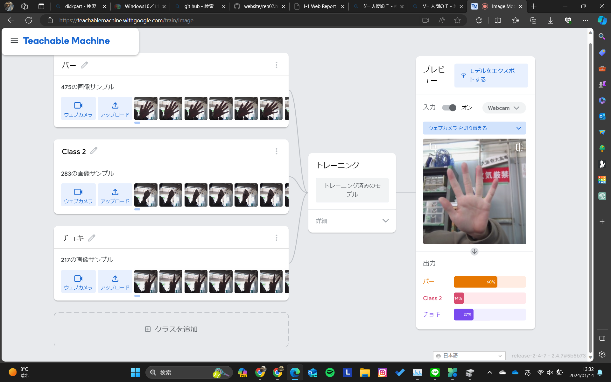

第2週目
2-1 １週目のレポートをHTMLで作る
１週目のレポート
1.内容
スクラッチで作った画像やゲームなどの写真をまとめ、感想などを書いた
2.感想
前回の授業のとき、部活の遠征で授業を聞けなかったが、やってみたら意外とできた。あと、特急の中でやってたから少し酔った。
2-2 機械学習体験

1.内容
「グー」「チョキ」「パー」をコンピュータに読み取らせ、コンピュータにどの手か判断させる判断させる。
2.感想
意外と判断をまちがえていた。背景を変えると認識も変わったので背景は固定させる必要があると思った。
2-3 VR（バーチャルリアリティー：Virtual Reality）会議室の体験
1.内容
Meta Quest2を着用し、バーチャル空間の教室に入った。
2.感想
人間の技術力のすごさが分かった